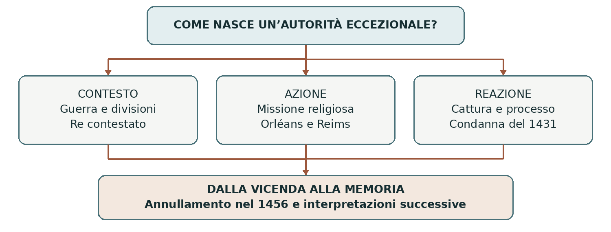

1412 circa–1431 • Guerra, fede e legittimità
Giovanna d’Arco
Giovanna d’Arco intervenne in un momento critico della guerra dei Cent’anni e contribuì alla riscossa di Carlo VII. La sua vicenda comprende azione militare, convinzione religiosa, processo e costruzione della memoria. La condanna del 1431 e il suo annullamento nel 1456 mostrano quanto la sua figura fosse legata alla legittimità del re.
0. Domanda generatrice
Come poté una giovane priva di cariche ereditarie diventare decisiva per la legittimità di una monarchia?
In sintesi Giovanna rese credibile una possibilità di vittoria e la collegò a una missione religiosa, ma la sua azione dipese anche da eserciti, corte e rapporti politici.
1. Il mondo precedente
All’inizio del Quattrocento il regno di Francia era lacerato dalla guerra con la monarchia inglese e dalla lotta interna tra fazioni armagnacca e borgognona. Il conflitto non opponeva due nazioni già compatte nel significato contemporaneo: importanti gruppi francesi sostenevano il campo avverso al delfino Carlo.
Il trattato di Troyes del 1420 riconobbe Enrico V d’Inghilterra come erede del re francese Carlo VI,
escludendo il delfino. Alla morte dei due sovrani nel 1422, la corona francese fu rivendicata sia dal
giovane Enrico VI sia da Carlo VII. Quest’ultimo controllava parte del territorio, ma non era ancora stato
consacrato a Reims, luogo tradizionale del rito regio.
In sintesi La guerra riguardava territori e successione: la legittimità del sovrano era un problema aperto.
2. Le fratture
Giovanna nacque a Domrémy intorno al 1412, in una famiglia contadina. Cresciuta in una zona esposta ai
conflitti, affermò di ricevere messaggi da figure celesti che le affidavano il compito di soccorrere la
Francia e condurre Carlo alla consacrazione. Lo storico può documentare queste dichiarazioni e i loro
effetti; non può verificare l’origine soprannaturale delle voci.
Nel 1429 raggiunse la corte a Chinon e ottenne di partecipare alla spedizione di soccorso a Orléans,
assediata dagli inglesi. Il suo progetto fu valutato da consiglieri e religiosi prima di ricevere sostegno. La
sua presenza diventò politicamente importante perché prometteva una svolta in una situazione di sfiducia.
In sintesi La missione dichiarata da Giovanna incontrò un bisogno concreto della monarchia e dell’esercito.
3. Attori, gruppi e conflitti
La forza della sua figura non cancella gli altri protagonisti né le divisioni all’interno del campo francese.
| Attori | Obiettivi e interessi |
|---|---|
| Giovanna | Si presenta come inviata da Dio; sostiene l’offensiva e la consacrazione di Carlo. |
| Carlo VII e la corte | Cercano vittoria e legittimità; valutano anche costi, negoziati e rischi politici. |
| Comandanti e soldati | Conducono le operazioni militari; reagiscono alla presenza e alle esortazioni di Giovanna. |
| Inglesi e alleati borgognoni | Difendono il controllo dei territori e la rivendicazione dinastica contrapposta. |
| Giudici e testimoni | Producono le fonti processuali, entro condizioni politiche e procedure differenti. |
In sintesi L’azione individuale acquistò efficacia dentro reti militari, religiose e politiche.
4. Il processo storico
Orléans e la consacrazione del re
Nel maggio 1429 l’assedio di Orléans fu spezzato. Giovanna partecipò alle operazioni, incoraggiò i combattenti e sostenne decisioni offensive: il suo ruolo non si riduce a un simbolo passivo. La vittoria fu però il risultato dell’azione di un esercito e dei suoi comandanti, non un’impresa compiuta da una persona sola.
Dopo altri successi nella valle della Loira, l’esercito raggiunse Reims, dove Carlo VII fu consacrato il 17
luglio 1429. Il rito aveva un valore religioso e politico: trasformava una rivendicazione contestata in una
regalità pubblicamente celebrata secondo la tradizione francese. Giovanna aveva collegato il successo
militare a questo obiettivo preciso.
Dalla cattura al processo
L’offensiva su Parigi fallì nel settembre 1429. Nel maggio 1430 Giovanna fu catturata presso Compiègne
da forze borgognone e successivamente consegnata agli inglesi. Non possiamo spiegare il mancato
salvataggio con intenzioni segrete attribuite al re senza prove: possiamo constatare che la protezione
ricevuta non bastò a evitarne la prigionia.
A Rouen, nel 1431, un tribunale ecclesiastico presieduto dal vescovo Pierre Cauchon, legato al campo
anglo-borgognone, la interrogò sulle voci, sull’obbedienza alla Chiesa e sull’abito maschile. Le accuse
religiose avevano conseguenze politiche: condannare la persona che aveva accompagnato Carlo a Reims
poteva danneggiare la sua legittimità.
Condanna e annullamento
Dopo un’abiura ottenuta nel maggio 1431, Giovanna fu accusata di essere ricaduta negli errori contestati. La questione dell’abito maschile ebbe un ruolo nel procedimento, ma ridurre il processo a una condanna “per come vestiva” ne nasconde l’intreccio teologico, giudiziario e politico. Fu arsa viva a Rouen il 30 maggio 1431.
La guerra continuò e la monarchia francese recuperò territori attraverso riforme militari, risorse fiscali e mutamenti di alleanze. Nel 1456, dopo nuove indagini e un processo autorizzato dal papa, la condanna fu dichiarata nulla. La riabilitazione non coincide con la canonizzazione, avvenuta soltanto nel 1920: sono atti diversi, separati da secoli.
In sintesi La missione, il processo e la riabilitazione furono tre modi differenti di discutere l’autorità di Giovanna e, indirettamente, quella del re.
Lo snodo decisivo
La consacrazione di Reims mostra come un successo militare potesse diventare legittimità politica attraverso un rito condiviso.
5. Le fonti in dialogo
Due processi e due contesti
Gli atti del processo di condanna del 1431 e quelli del procedimento di annullamento del 1455–1456 sono fonti centrali. Il secondo raccolse anche testimonianze a distanza di anni.
Contenuto — sintesi didattica: Nel primo i giudici sottoposero a controllo l’autorità rivendicata da Giovanna attraverso le voci e la sua obbedienza ecclesiastica. Nel secondo furono esaminate irregolarità, pressioni e modalità del precedente procedimento.
Interpretazione e limiti: Le risposte ci arrivano attraverso domande, verbalizzazioni e traduzioni; i ricordi successivi risentono del tempo e del nuovo contesto politico. Le due serie non sono una biografia scritta liberamente da Giovanna.
Domanda di lettura: Perché conoscere chi pone le domande è necessario per interpretare le risposte di un’imputata?
Fonti processuali e contesto: Ministero della Giustizia francese
In sintesi I documenti giudiziari conservano informazioni preziose, ma anche le asimmetrie del processo.
6. Conseguenze e nuovo assetto
Giovanna divenne un riferimento religioso e politico ben oltre la sua vita. La sua memoria fu interpretata in modi differenti da monarchici, repubblicani, credenti e nazionalisti. Ogni uso successivo selezionava aspetti diversi della stessa vicenda.
La sua storia permette di osservare una donna che agì in ambienti dominati da uomini, senza trasformarla automaticamente in una portavoce di idee contemporanee. La sua autorità dichiarata derivava dalla missione divina, dentro il linguaggio religioso e monarchico del Quattrocento.
In sintesi La protagonista storica va distinta dalle immagini costruite nei secoli successivi.
7. Conclusione
Giovanna acquistò forza perché unì convinzione, iniziativa e un messaggio capace di mobilitare un campo in crisi. La monarchia poté servirsi di quella forza, ma non la rese invulnerabile. Il suo processo rivela il rischio politico di rivendicare un’autorità eccezionale.
Sintesi finale La Francia era divisa anche al proprio interno. Giovanna affermò di avere una missione religiosa. Nel 1429 contribuì a Orléans e alla consacrazione di Reims. Catturata nel 1430, fu condannata e uccisa nel 1431. La condanna fu annullata nel 1456; la memoria continuò a cambiare.
Per studiare e collegare
Coordinate essenziali
Domrémy, Chinon, Orléans, Reims, Compiègne e Rouen. Azione pubblica soprattutto tra 1429 e 1431; annullamento della condanna nel 1456.
Saperi irrinunciabili
1. Giovanna nacque intorno al 1412.
2. La guerra dei Cent’anni includeva una guerra civile francese.
3. Troyes escluse il delfino dalla successione nel 1420.
4. Le voci sono documentate come dichiarazioni di Giovanna.
5. Orléans fu liberata nel maggio 1429.
6. Carlo VII fu consacrato a Reims il 17 luglio 1429.
7. Giovanna fu catturata presso Compiègne nel 1430.
8. Il processo di Rouen ebbe una forte dimensione politica.
9. Fu arsa viva il 30 maggio 1431.
10. Annullamento del 1456 e canonizzazione del 1920 sono distinti.
Mappa concettuale

Il consenso conquistato in guerra non protegge automaticamente da una sconfitta politica e giudiziaria.
Strumenti e attività
Linea del tempo ragionata
| Quando | Che cosa cambia |
|---|---|
| 1420–1422 | Troyes e successione contesa al trono francese. |
| Maggio 1429 | Fine dell’assedio di Orléans. |
| Luglio 1429 | Consacrazione di Carlo VII a Reims. |
| 1430–1431 | Cattura, processo e morte di Giovanna. |
| 1456 | Annullamento della condanna. |
| 1920 | Canonizzazione: un passaggio della memoria religiosa. |
Vocabolario essenziale
Delfino. Titolo dell’erede alla corona francese.
Consacrazione. Rito religioso che conferisce sacralità alla regalità.
Eresia. Dottrina giudicata contraria alla fede dall’autorità ecclesiastica.
Abiura. Rinuncia formale a convinzioni o affermazioni contestate.
Riabilitazione. Rimozione di una condanna o del discredito che ne deriva.
Attività di comprensione
1. Spiega perché Reims contava politicamente, oltre che religiosamente.
2. Distingui convinzione personale, azione militare e riconoscimento della corte.
3. Confronta i due processi indicando come cambia il contesto delle testimonianze.
Fonti e approfondimenti
Approfondimento di storia per la classe terza. Fonti e studi per verificare e ampliare la lettura.
Treccani — Giovanna d’Arco
Documenti — Sentenza di annullamento del 1456
Bibliothèque nationale de France — Giovanna d’Arco e le fonti